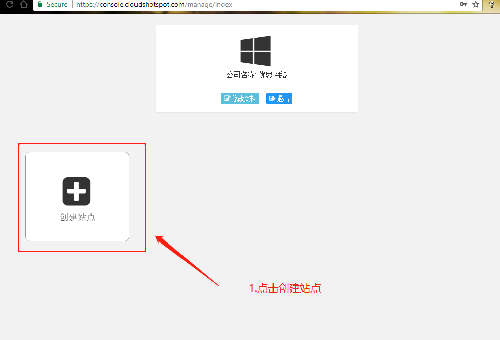
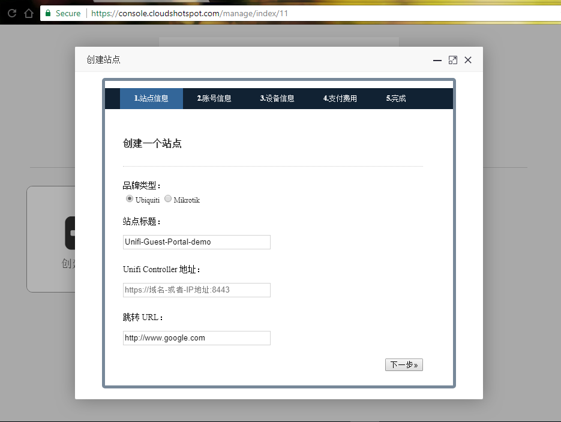
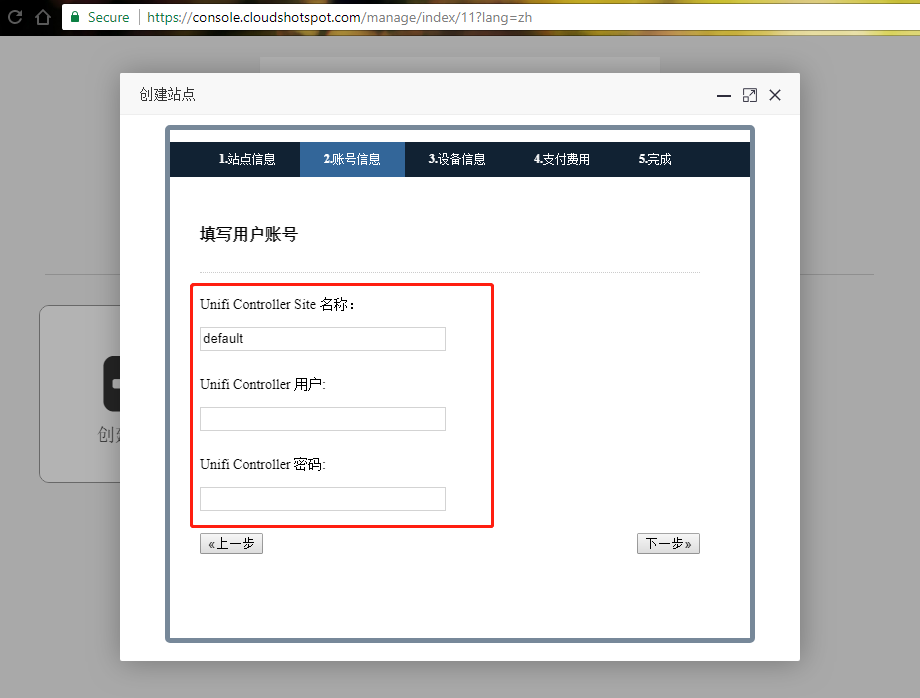
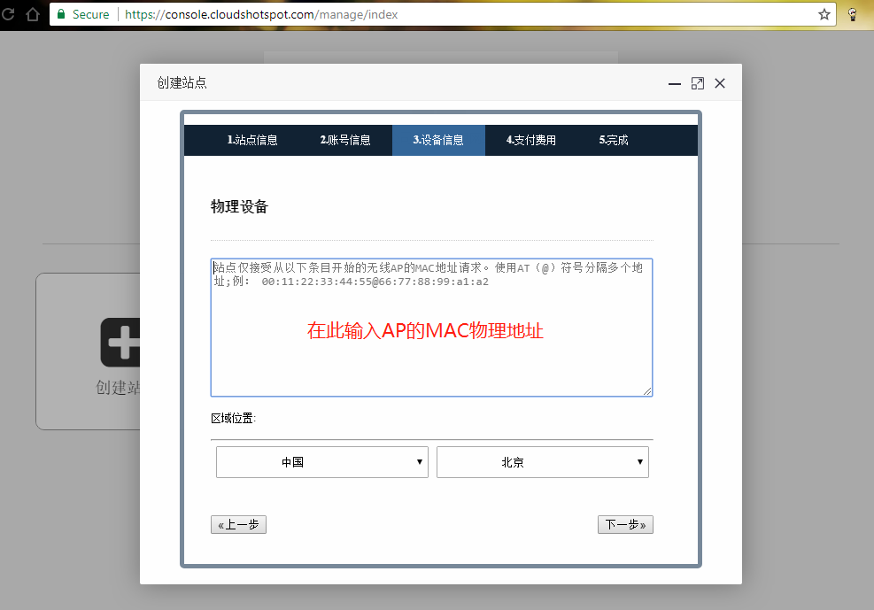
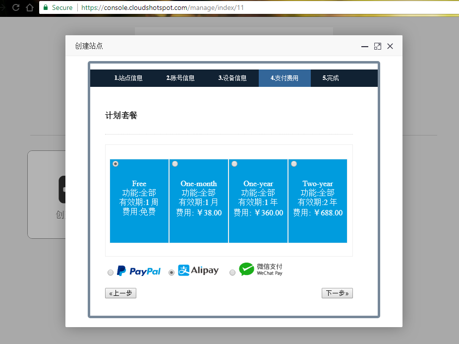
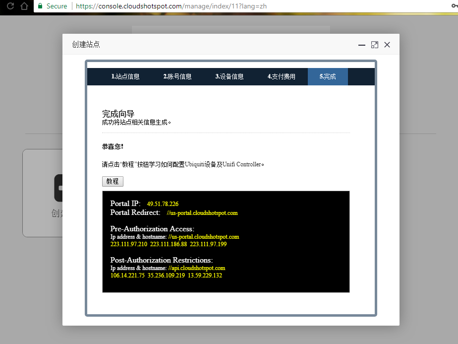

对接Ubiquiti Network - Guest Portal
登录控制台 https://console.cloudshotspot.com
1.创建站点：
成功登录后,点击创建站点。

2.站点信息:
品牌类型:选择Ubiquiti
输入相应的信息 Unifi Controller地址：输入IP或域名都可以
跳转URL:输入认证完成后的跳转的URL网址
然后选择下一步.

3.账号信息
说明：这里的用户与密码在配置hotspot时要一致

4.设备信息
物理设备:就是MAC地址,就是服务Hotspot的接口
区域位置:服务器所在的地理位置,选择一个最接近的

5.选择套餐
在这里选择免费

6.配置信息
在这一步骤,说明已经创建站点完成.
下载站点生成的hotspot模板ZIP文件,上传至RouterOS中
复制配置信息，粘贴到路由器中
